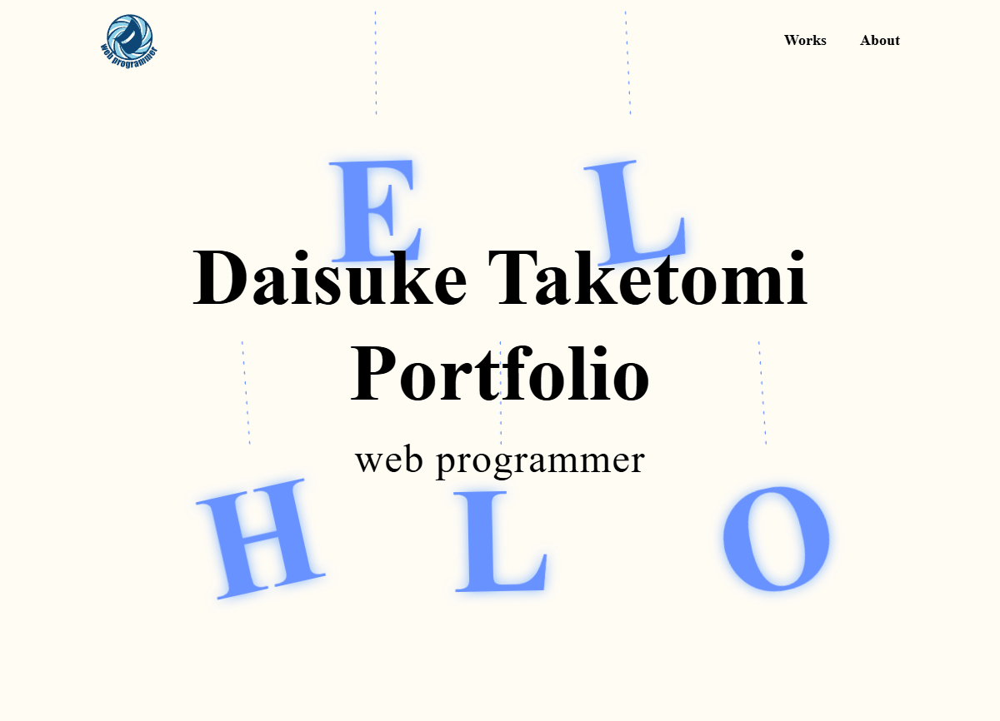

ポートフォリオサイト
Design/Coding
就職活動を目的としたポートフォリオサイトを制作しました。
-
- 就職活動において内定獲得すること（最終ゴール）
- 「面接でさらに詳しく話を聞いてみたい」「一度会ってみたい」と採用担当の方に思っていただくこと
-
- 自身のオリジナルポートフォリオサイトを持っていないため、スキルや制作物が見えない
- 履歴書や職務経歴書だけでは自身の人柄や考えなどが伝わりづらい
-
- 企業の採用担当、現場の方々
- 情報設計
-
- 採用担当、現場の方々が最も重要視される「制作物」をMVの下に配置しています。制作物のジャンルで絞り込むボタンを設置し、興味のある制作物にすぐにアクセスしやすいようにしました。
- サイトの閲覧に時間が掛からないよう、サイトの表示速度を考慮しアニメーションをMVのみとしました。
- 「社風や現場のメンバーとマッチするのか？」「伸び代はあるのか？」の判断材料になるよう、Aboutページでは履歴書や職務経歴書には掲載されていない情報を掲載しています。
- デザイン詳細
-
- 与えたい印象：誠実、信頼、優しい、親しみ
- メインカラー：ロゴの青色
- 配色：青色、水色、薄い水色
- フォント：Outfit、Zen Kaku Gothic New
- デザイン意図
-
- 見やすさや情報へのアクセスのしやすさを考慮し、シンプルなスタイルにしています。MVのデザインを工夫することで差別化を図っています。
- 全体的に自分の人柄や目指す像（誠実さ、信頼、親しみ）が伝わるよう、デザインしています。
-
MVデザイン
- 自分が昔から好きな食べ物である「メロン」モチーフのオブジェクトを用いました。
- 「メロン=実」であることから、自分の名前の一文字「実」や与えたい印象である誠「実」を表現しています。
- 実の部分（円）は「調和・やさしさ」、ツルは曲線とハートにすることで「やわらかさ・あたたかみ・心」を表現しています。
- 青色のグラデーションにすることで「誠実さ」や「IT感」を表現しています。
- 画像の角やボタン、ヘッダーを丸くすることで「やさしさ・あたたかさ」を表現しています。
- 「あたたかみ」を与えるため、プロフィール画像をイラストにしています。（プロフィールのイラストは自身で描いています）
- 「フロントエンドエンジニアを目指すまで」はストーリーのようなデザイン（横にスワイプしていく）にすることで楽しく読めるよう工夫しました。
- 制作期間
-
- ワイヤーフレーム
- 1日
- デザイン
- 2週間
- コーディング
- 4週間
- WordPress構築
- 2週間
- 担当領域
- サイトマップ作成/ワイヤーフレーム作成/デザイン/コーディング/WordPress構築
- 開発手法
- HTML/CSS/JavaScript/PHP/WordPress
- 使用ツール
- Figma/VisualStudioCode
目的
課題
ターゲット